Geração de Código Intermediário
Frank Coelho de Alcantara -2020

Identificação de tipos
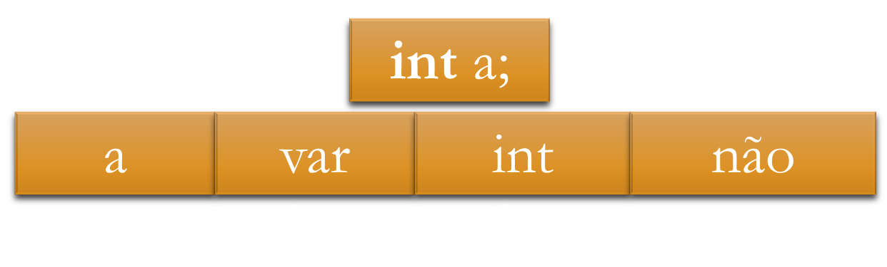 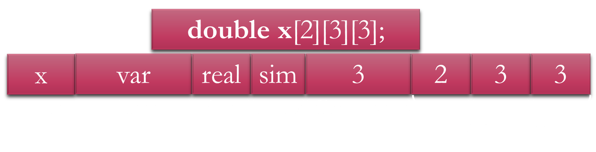Classificação dos tipos
Estáticos: sua definição é realizada em tempo de codificação e a verificação em tempo de compilação;
Dinâmicos: sua definição pode, ou não, ser realizada em tempo de codificação mas, sua verificação é realizada em tempo de execução.
Primitivos: não possuem estrutura interna. Ex.: inteiro, real, booleano, carácter, string, intervalo e enumeração.
Compostos: possuem uma estrutura interna composta por tipos básicos e outros tipos compostos. Ex.: ponteiros, estruturas, registros, vetores e matrizes.
ConstruÁdos: são tipos, geralmente compostos, definidos pelo programador. Ex.: typedef.
Estáticamente Tipadas
Uma vez que a variável tenha sido declarada com um determinado tipo, não é possÁvel utilizar este identificador com qualquer outro tipo. Deve ser emitido um erro, ou warning, caso isso ocorra.
Dinâmicamente Tipadas
Os tipos são atribuÁdos aos identificadores em tempo de execução o que resulta em código mais difÁcil de otimizar. E força a verificação do tipo a cada uso do identificador.
Fortemente Tipadas
Uma vez que um tipo seja atribuÁdo a um determinado identificador, este identificador não poderá ser usado com tipos diferentes.
Fracamente Tipadas
A cada uso do identificador é possÁvel atribuir um tipo diferente de acordo com as necessidades do programador.
Informações Semânticas
| Informação | Forma | Uso |
|---|---|---|
| Tabelas de SÁmbolos | Declarações | Expressões e declarações |
| Informação de tipo | Expressões e declarações | Operações |
| Constantes e variáveis | Expressões e declarações | Expressões e declarações |
| Registradores e Memórias | Compilador/interpretador | Geração de código |
| Valores literais | Constantes e variáveis | Expressões e declarações |
Verificação de Tipos

Exemplo
Vamos determinar os atributos para uma linguagem aritmética simples com as regras de produção e atributos explicitados a seguir.
- $PROGRAM \rightarrow DECL$ $STMT$
- $DECL \rightarrow 𝑖𝑛𝑡$ $𝑖𝑑$
- $STMT \rightarrow EXP⁡ = EXP$
- $EXP \rightarrow 𝑖𝑑 | EXP + EXP | 1$
- $env$ (ambiente, e.g. tabela de sÁmbolos): sintetizada por $DECL$ e herdado por $STMT$;
- $type$ (tipo da expressão); sempre sintetizado;
- $cat$ ( categoria variável $[var, lvalue] \times valor [val, rvalue])$: sempre sintetizado.
- $error$ para destacar possÁveis erros.
Exemplo: atribuição
Vamos determinar os atributos para uma linguagem aritmética simples com as regras de produção e atributos explicitados a seguir.
- $PROGRAM \rightarrow DECL$ $STMT \Rightarrow PROGRAM.env = DECL.env STMT.env$
- $DECL \rightarrow 𝑖𝑛𝑡$ $𝑖𝑑$ $\Rightarrow DECL.env = \{identifier, int, var\}$
- $EXP⁡ \rightarrow 1 \Rightarrow EXP.cat = val \wedge EXT.type=int$
- $EXP \rightarrow 𝑖𝑑 \Rightarrow id.type = EXP.env.lookup(id) \wedge$
$ EXP.type = id.type \wedge EXP.cat = id.cat$ - $EXP \rightarrow EXP1 + EXP2 \Rightarrow EXP.cat = val \wedge EXP1.env = EXP.env \wedge $
$ EXP1.env = EXP.env \wedge$
$EXP.type = EXP1.type = EXP1.type \wedge$ $error=\text{"Tipos diferentes"}$ - $STMT \rightarrow EXP⁡1 = EXP2 \Rightarrow EXP2.env = STMT.env \wedge EXP1.env = STMT.env$
$\wedge$ $error=\text{"Tipos diferentes"} \wedge$ $ error=\text{"Se"} cat = val"$
Exemplo: observações
Gramáticas de atributo são excelentes para estruturação da verificação semântica.
Estas regras podem ser estendidas para atender operações e declarações mais complexas.
Acrescente mais campos aos nós da AST para incluir mais atributos.
Isto é só um exemplo.
Problemas da Análise Semântica
Manter a informação necessária (criar, acessar e atualizar): tabelas de sÁmbolos.
Integrar a análise semântica no parser: AST - Abstract Sintatic Tree.
Computação das expressões semânticas: análise de tipos..
Fazer com que todo o processo seja rápido, muito rápido..
Tabelas de SÁmbolos
Principais Funções
Mapeia identificadores para:$\text{𝑡𝑦𝑝𝑒, 𝑐𝑎𝑡, 𝑙𝑜𝑐𝑎𝑙𝑖𝑧𝑎çã𝑜, 𝑜𝑢𝑡𝑟𝑎𝑠 𝑝𝑟𝑜𝑝𝑖𝑒𝑑𝑎𝑑𝑒𝑠 }$
Mantém as operações necessárias para abertura e fechamento de escopos e localização de itens.
Queremos as complexidade $O(1)$ para encontrar qualquer atributo.
Usamos informações adicionais para manter o fluxo de código: operações de entrada e saÁda de escopo, por exemplo.
Em compiladores de múltiplos passos, a tabela de sÁmbolos deve persistir durante todos os ciclos.
Linked Lists ou Hash Tables
Tabela de SÁmbolos - item
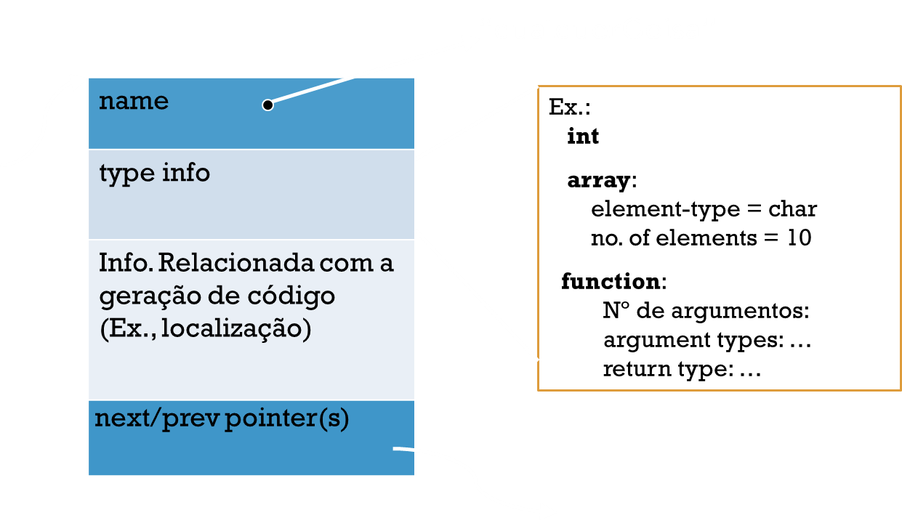Tabela de SÁmbolos - itens

Tabela de SÁmbolos - Implementação
Para cada novo escopo: push uma tabela de sÁmbolos novas no item (stack).
Crie a tabela de sÁmbolos como a uma pilha feita com linked lists de tabelas de sÁmbolos.
Os identificadores mais novos ficam no topo da pilha.
Busca: procure na pilha de tabelas de sÁmbolos de cima para baixo.
Integrando a verificação semântica no parser
Só para lembrar
Árvores sintáticas são representações internas do compilador, criadas pelo parser e usadas para geração de código.
Cada pai representa uma operação, cada filho representa um operando.
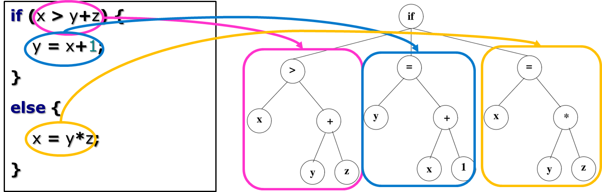Construindo a Árvore

Tipos, e mais tipos
Definição de Tipos
Um tipo é uma classificação que representa um conjunto especÁfico de dados. Esta classificação define as operações que podem ser realizadas com estes dados.
Definição de Sistema de Tipos
Um conjunto de regras para garantir a aplicação e verificação de tipos em artefatos de uma linguagem de programação.
Anotação de Tipos

Tipos de Tipos

Inferência

Exemplos: Sistemas de Tipos

Tipos são conjuntos

Por que tipos?

Só de Curiosidade
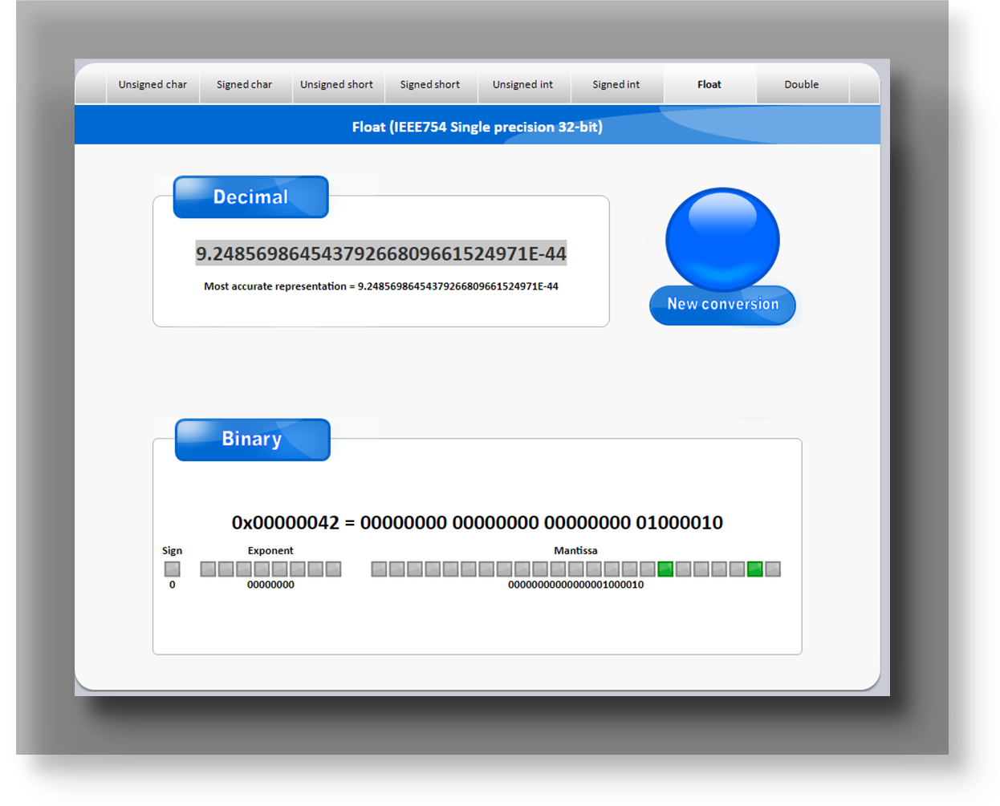Exemplo de anotação

Só para lembrar 2!
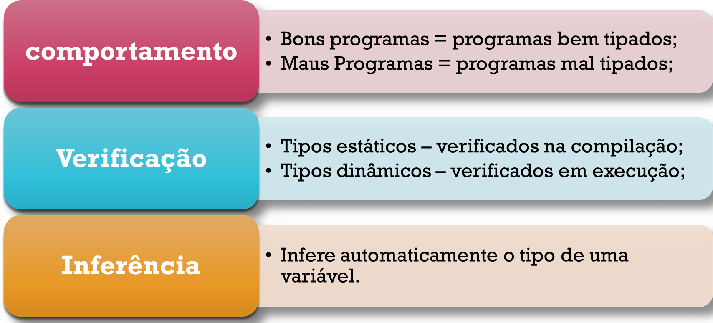Estáticos versus Dinâmicos
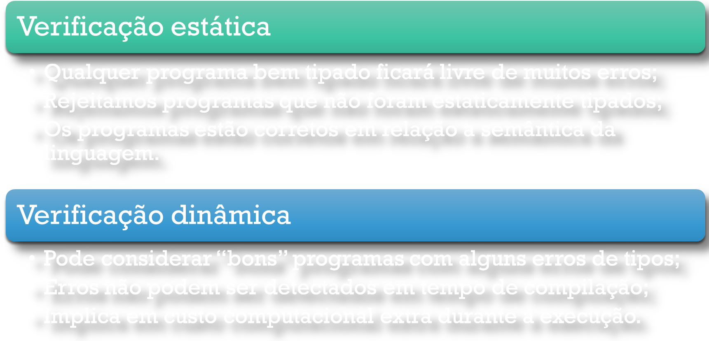Exemplo: "a" + 1
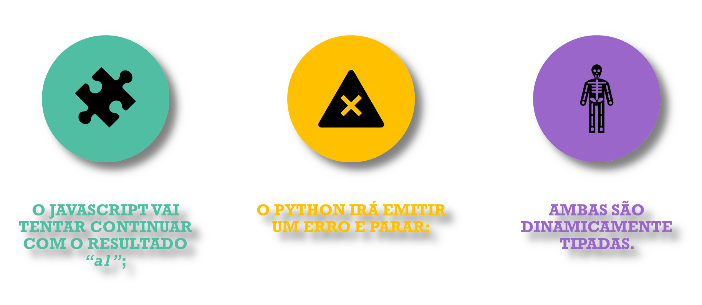Propriedades do Sistema de Tipos
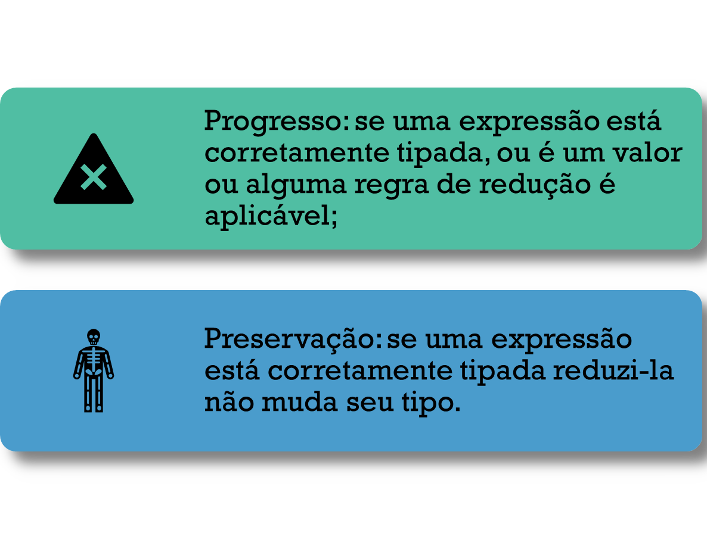Fluxo de Verificação
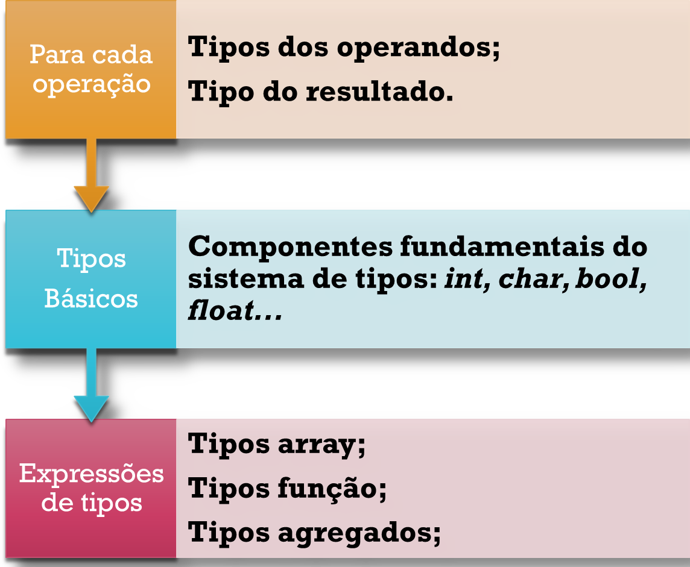Matemática, sempre acaba na Matemática.
Para Pensar
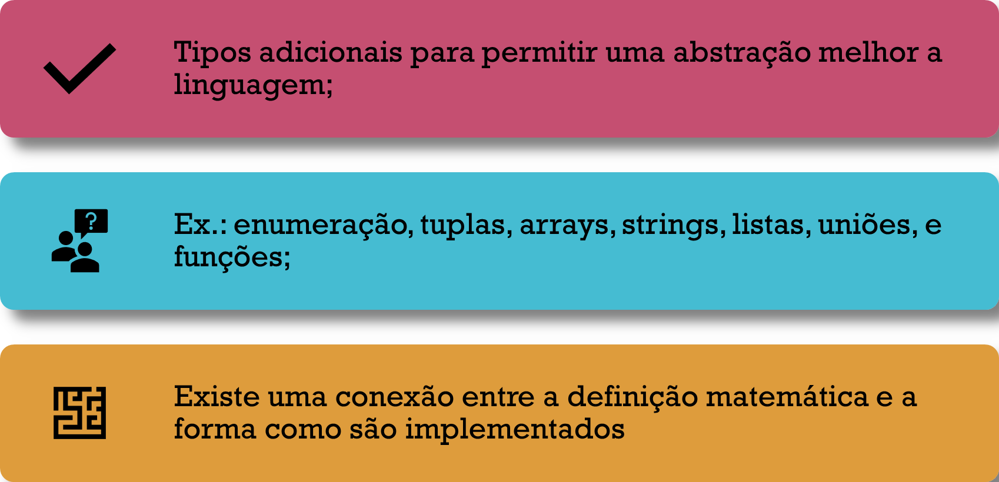Enumeração

Tuplas

Tuplas - Considerações

Vetores

União

Coproduto

Funções

Variant, Union

Variant, Union - Considerações
Cada campo usa o mesmo espaço de memória então o tamanho da union é o tamanho do maior campo definido.
Só Podemos usar um campo de cada vez. Se atribuirmos valores, ainda que corretos, para cada um dos campos em sequencia, apenas a última atribuição terá sentido.
Uma herança dos tempos que a memória era muito cara e reduzida.
Nestes tempos a uninion era uma forma bem razoável de manter uma metáfora consistente nos seus programas.
Structs
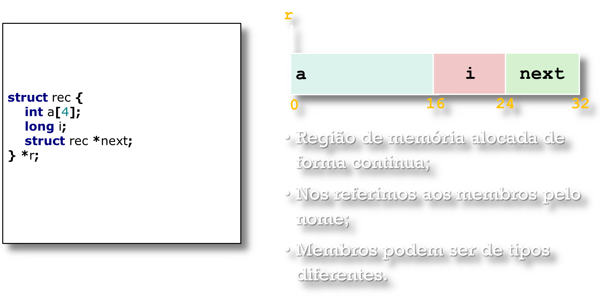Structs - Considerações
As structs são representadas como um bloco de memória, grande o suficiente para armazenar todos os campos.
O campos são ordenados de acordo com a a ordem de declaração.
O compilador irá determiner o tamanho total e a posição dos campos em memória. Durante a execução o programa não entende a estrutura da struct.
Ou seja, a struct, como a definimos só existe em forma de artefato de Código e metáfora.
Vantagem das Structs
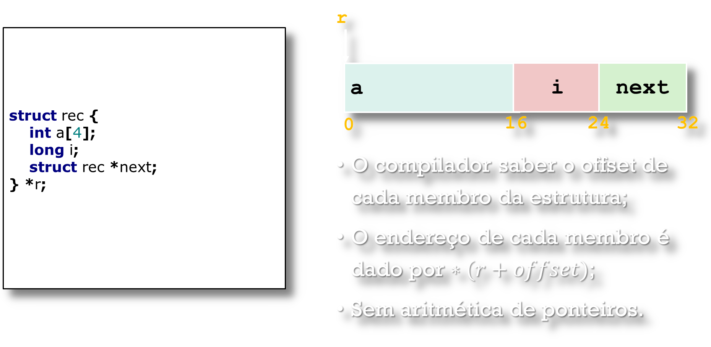Sistema de Tipos: Definição.
Como fazer isso?
Em Linguagem Natural

Em Linguagem Natural - Exemplo
Uma declaração é bem formatada se:
Sua variável alvo está bem formatada;
Sua expressão fonte está bem formatada, e os tipos declarados da fonte e do alvo coincidem;
Uma condicional é bem formatada se sua expressão de teste for do tipo bool e tanto a opção then quanto a opção else estão bem formatadas.
O Python (CPython) é definido desta forma.
Cálculo de Sequentes

Cálculo de Sequentes - Exemplo
Como podemos verificar os tipos nas seguintes declarações em cálculo de sequentes?
$\text{𝑓𝑙𝑜𝑎𝑡 𝑓(𝑓𝑙𝑜𝑎𝑡 𝑥, 𝑓𝑙𝑜𝑎𝑡 𝑦) \{ 𝑟𝑒𝑡𝑢𝑟𝑛 𝑥+𝑦; \}}$
$𝑥 : 𝑓𝑙𝑜𝑎𝑡, 𑦠: ğ‘“ğ‘™ğ‘œğ‘𑡠⊢ 𝑥+𑦠: 𝑓𝑙𝑜𝑎𝑡$
$\text{𝑖𝑛𝑡 𝑔(𝑖𝑛𝑡 𝑥, 𝑖𝑛𝑡 𝑦) \{ 𝑟𝑒𝑡𝑢𝑟𝑛 𝑥+𝑦; \}}$
$𝑥 : 𝑖𝑛𝑡, 𑦠: 𝑖𝑛𝑡 ⊢ 𝑥+𑦠: 𝑖𝑛𝑡$
Regras de Atribuição
Usamos o cálculo de sequentes para definir as regras de atribuição, verificação e checagem de tipos.
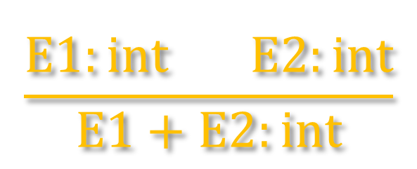Lemos: se 𝐸1 tem tipo int e 𝐸2 tem tipo int então E1+E2 tem tipo int
Cálculo de Sequentes - Exemplo
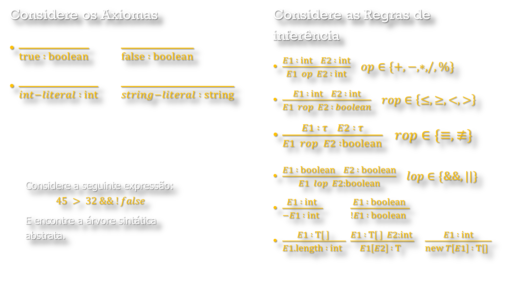ConstruÁndo a AST
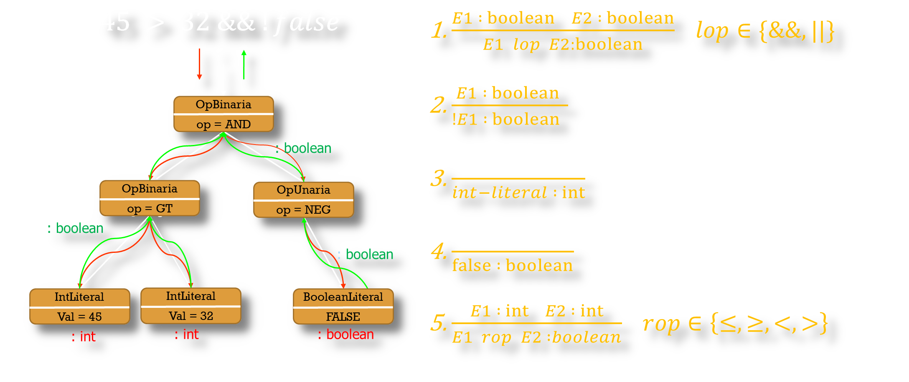Equivalência
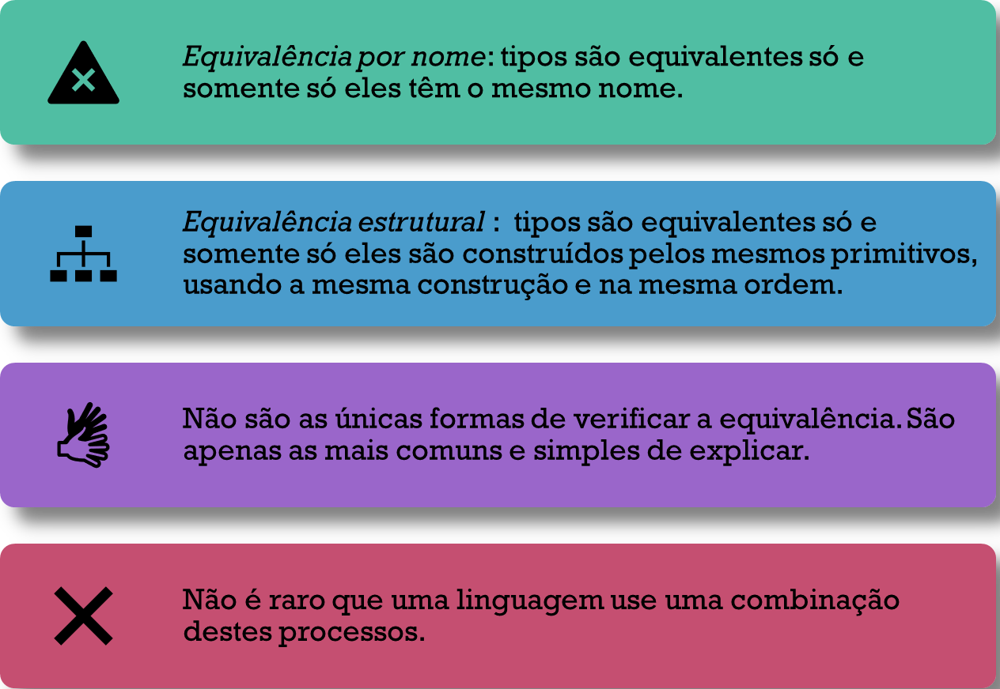Material de apoio
Você pode baixar o material de apoio clicando aqui
Referências
AHO, A. V. et al. Compiladores: princÁpios, técnicas e ferramentas. 2º. ed. Boston, MA, USA: Pearson Education Inc. , 2007.
Appel, Andrew W. Modern Compiler Implementation in Java, 2nd ed. Cambridge, 2002. (Editions in ML and C also available; the “tiger books”)
CASS, S. The 2016 Top Programming Languages. IEEE Spectrum, 2016. DisponÁvel em:
Grune, Dick, Henri E. Bal, Ceriel J.H. Jacobs, and Koen G. Langendoen. Modern Compiler Design. Wiley, 2000
Hogg, Jim. CSE-P501 Compilers. Washington University, 2005